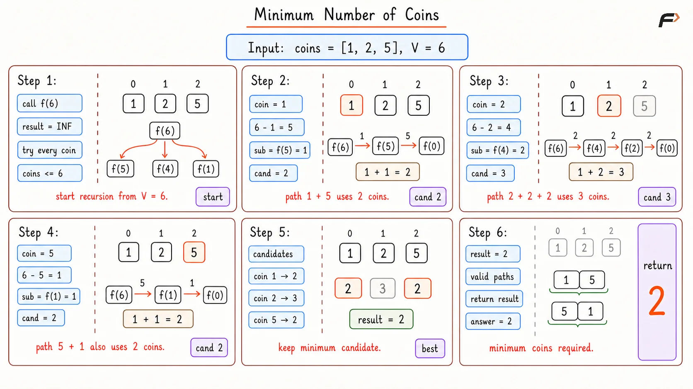
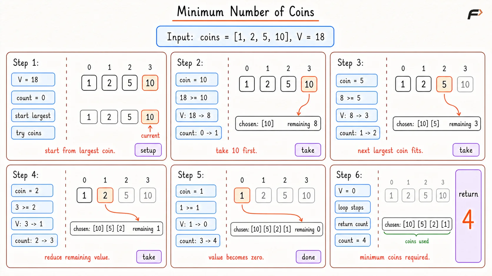

Minimum Number of Coins
You are given an array of integers representing standard currency denominations . You are also given an integer V representing a target amount of money.
Assuming you have an infinite supply of each coin denomination, find and return the minimum number of coins required to make exactly the amount V.
Example 1
Input: coins = [1, 2, 5], amount = 11
Output: 3
Explanation: The amount 11 can be made as 5 + 5 + 1, so the minimum number of coins is 3.
Example 2
Input: coins = [2, 6], amount = 7
Output: -1
Explanation: There is no way to make exactly 7 using only coins 2 and 6.
Brute Force Approach
The most direct idea is to try every coin that can fit into the current amount.
If the amount is 43, one possible first coin is 20. Then the remaining amount becomes 23. Another possible first coin is 10. Then the remaining amount becomes 33. The recursive approach explores all such choices. For every coin picked, it says: answer = 1 + minimum coins needed for the remaining amount
After trying all possible coins, the smallest answer is chosen. This is easy to understand, but it does a lot of repeated work. The same remaining amounts are solved again and again.
Algorithm
If the amount becomes
0, return0because no more coins are needed.Keep a large value as the current best answer. This helps track the minimum among all choices.
Try every coin one by one. This is done because any coin may be the first coin in the best answer.
If the coin is not greater than the current amount, recursively solve the remaining amount.
If the recursive answer is valid, add
1for the coin just picked and update the minimum answer.If no coin can form the amount, return
-1.
Dry Run

Maximum Number of Coins Brute Dry Run
Solution
#include <bits/stdc++.h>
using namespace std;
class Solution {
public:
int minCoins(vector<int>& coins, int V) {
// Base case: no more coins needed
if (V == 0) return 0;
int result = INT_MAX;
// Try every single coin
for (int i = 0; i < coins.size(); i++) {
if (coins[i] <= V) {
int sub_res = minCoins(coins, V - coins[i]);
// If the path is valid, add 1 for the current coin
if (sub_res != INT_MAX && sub_res + 1 < result) {
result = sub_res + 1;
}
}
}
return result;
}
};
//Driver Code starts
int main() {
Solution sol;
vector<int> coins = {1, 2, 5};
int V = 11;
cout << "Minimum coins required: " << sol.minCoins(coins, V) << endl;
return 0;
}Complexity Analysis
Time Complexity: Exponential, because many coin combinations are explored repeatedly.
Space Complexity: O(V) in the worst case because the recursion depth can go up to the amount.
Optimal Approach
The improvement is simple: for standard currency systems, there is no need to test every combination. Always take the largest coin that does not exceed the remaining amount. If the amount is 43, first take 20. The remaining amount becomes 23. Take another 20. The remaining amount becomes 3. Now take 2, then take 1.
So the answer becomes: 20 + 20 + 2 + 1
That uses only 4 coins. This is the greedy pattern: make the best local choice right now and move forward without looking back.
Algorithm
Sort the coins in decreasing order. This lets the largest useful coin be checked first.
Start from the largest coin and check how many times it can fit into the remaining amount.
Add that count to the answer because those coins are now used.
Reduce the amount using the remainder after taking that coin.
Continue until the amount becomes
0.If some amount is still left, return
-1. This handles cases where the given coins cannot form the exact amount.
Dry Run

Maximum Number of Coins Optimal Dry Run
Solution
#include <bits/stdc++.h>
using namespace std;
class Solution {
public:
/*
Recursively tries every valid coin choice
and returns the minimum number of coins.
*/
int solveRecursive(vector<int>& coins, int amount) {
// If amount is 0, no more coins are needed.
if (amount == 0) {
return 0;
}
// This stores the best answer found so far.
int best = INT_MAX;
for (int coin : coins) {
// A coin can be picked only if it does not
// exceed the remaining amount.
if (coin <= amount) {
int nextAnswer = solveRecursive(coins, amount - coin);
// Update the answer only when the remaining
// amount can be formed.
if (nextAnswer != -1) {
best = min(best, 1 + nextAnswer);
}
}
}
// If best was never updated, this amount is impossible.
if (best == INT_MAX) {
return -1;
}
return best;
}
/*
Uses the largest possible coin first
for standard currency systems.
*/
int minCoinsGreedy(vector<int> coins, int amount) {
sort(coins.rbegin(), coins.rend());
// This stores the total number of coins used.
int count = 0;
for (int coin : coins) {
// Use this coin only if it can fit
// into the remaining amount.
if (coin <= amount) {
count += amount / coin;
amount %= coin;
}
}
// If amount is still left, exact change is impossible.
if (amount != 0) {
return -1;
}
return count;
}
};
int main() {
// Driver code starts
vector<int> coins = {1, 2, 5, 10, 20, 50, 100, 500, 1000};
int amount = 43;
Solution obj;
cout << obj.solveRecursive(coins, amount) << endl;
cout << obj.minCoinsGreedy(coins, amount);
return 0;
}Complexity Analysis
Time Complexity: O(n log n) because the coins are sorted first.
Space Complexity: O(1) apart from sorting, because constant extra space is used.
Interview follow-up Questions
No! The greedy approach only works perfectly on standard currency systems (like US Dollars or Indian Rupees) because the denominations are specifically engineered so that larger notes cleanly dominate smaller combinations. However, if you had an arbitrary coin system like [1, 3, 4] and needed to make 6, the greedy algorithm would incorrectly pick 4, 1, 1 (3 coins). The true optimal answer is 3, 3 (2 coins). For random coin systems, you must abandon greedy logic. If you want to understand this in detail, check our guide on Dynamic Programming.